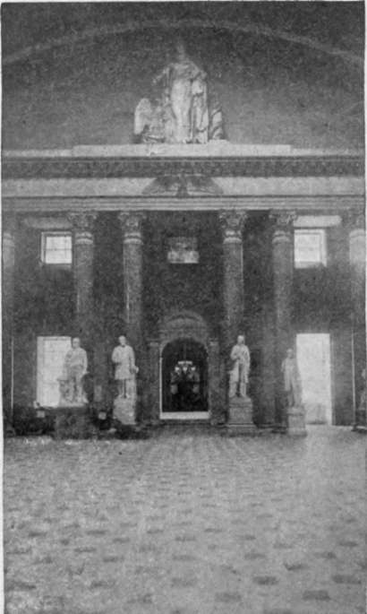

Old Hall Of Representatives
Description
This section is from the book "The National Capitol. Its Architecture Art And History", by George C. Hazelton, Jr. Also available from Amazon: The National Capitol Its Architecture Art and History.
Old Hall Of Representatives
This corridor passes through Statuary Hall, which, as the original Hall of Representatives, was occupied by the House from 1807 to 1814, when the British burned the Capitol, and again, after the restoration by Latrobe, until the 16th of September, 1857, when that body formally took possession of its present chamber. Since that time, the hall has not been altered, save to remove the furniture and draperies and to tile the floor. This was once nearly four feet lower than it is to-day, and in its elevation relative to that of the Senate, no doubt, took rise the otherwise inappropriate title of the " Lower House".
In the old days, even after the restoration, there were few decorations in the Capitol. The walls for the most part were plain, and whitewashed every year. No extensive lobbies, as now, existed for the accommodation of the Members. When there was a " call " of the House, a vote or a motion for adjournment, Representatives were notified by two large bells, one in each of the corridors down stairs near the committee rooms, which were rung by the doorkeepers in such a manner as to distinguish their meaning. These sounded like great fire-bells through the Capitol.
Librarian Watterston, writing in 1842 of this chamber, says the capitals of the pillars support a" dome with painted caissons, to represent that of the Pantheon at Rome. From the centre of this dome is erected, to admit the light from above, a handsome cupola, richly painted and ornamented by a young Italian artist named Bonani, who also painted the ceiling, and who died in this city soon after it was completed. The colossal figure of Liberty (in plaster) is by Causici. On the entablature beneath is sculptured in stone the American eagle in the act of taking wing, executed by another Italian artist (Valaperti) of high reputation, who has left but this single specimen of his talents in this country, and who disappeared suddenly and mysteriously soon after it was executed. Between columns, at their base, are placed sofas for the accommodation of the members and those who are privileged to enter the Hall ; and within the bar, in a semicircle fronting the Speaker's chair, are seated the members of the House, each of whom is furnished with a mahogany desk, an armed chair, and writing materials. The entran es to the galleries are at the south end of the wing; and at the point on each side of the Hall, where the staircases diverge, is stationed a doorkeeper, to prevent the persons from passing into the ladies' gallery, who are excluded by the rule, and to direct others who are not the way in to it, and also to the gentlemen's gallery opposite. There is also a passage to those galleries from the interior of the Hall, which leads through two lobbies. On the left of the eastern lobby are the Speaker's room and that of the Sergeant-at-Arms, and alx>ve the latter an apartment for bound documents and state papers, called the Library of the House. At the same elevation in the western lobby are two commodious apartments, which are used as the depositories of Executive and Congressional documents not bound, and for immediate use. Below one of these and on the floor of the lobby formed by an angle of the building, is the Post Office of the House".
Lafayette's picture, presented to Congress during his last visit to America, then hung on the west side of the loggia; Vanderlyn's Washington in a panel on the opposite side. Dickens, who visited Congress nearly every day during his stay in Washington in the same year, describes this chamber as " a beautiful and spacious hall of semicircular shape, supported by handsome pillars. One part of the gallery is appropriated to the ladies, and there they sit in front rows, and come in, and go out, as at a play or concert. The chair is canopied, and raised considerably above the floor of the House; and every member has an easy-chair and a writing-desk to himself ; which is denounced by some people out-of-doors as a most unfortunate and injudicious arrangement, tending to long sittings and prosaic speeches. It is an elegant chamber to look at, but a singularly bad one for all purposes of hearing. Both Houses are handsomely carpeted ; but the state to which these carpets are reduced by the universal disregard of the spittoon with which every honorable member is accommodated, and the extraordinary improvements on the pattern which are squirted and dabbled upon it in every direction, do not admit of being described. It is strange enough too, to see an honorable gentleman leaning back in his tilted chair with his legs on the desk before him, shaping a convenient - plug' with his pen knife, and when it is quite ready for use, shooting the old one with his mouth as from a pop-gun, and clapping the new one in its place. I was surprised to observe that even steady old chewers of great experience are not always good marksmen".
Continue to: